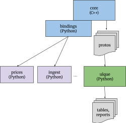

非官方中文译文 · 术语保留英文；代码、account、option、币种原样。 原文：https://beancount.github.io/docs/beancount_v3/
Beancount Vnext：目标与设计
Martin Blais，2020 年 7 月
http://furius.ca/beancount/doc/Vnext
动机
是时候对 Beancount 进行一次更新，并为它的下一个迭代制定一个具体的计划了。这些想法在我脑海中已经酝酿了很长时间——至少有一年——我将它们写下来，部分是为了分享我们对这款用于整理财务的产品未来形态的愿景，部分是为了征求反馈，还有一部分是为了梳理我的思路，并对真正重要的事情进行合理的优先级排序。
当前状态。 Beancount 目前的开发状态已经停滞了一段时间，原因有很多。该软件的状态远非完美（我将在本文档中列举主要问题），但我一直抵制进行过多更改，以便为自己和其他人提供一个真正稳定的工作基础。更重要的是，虽然过去我能够利用大量的周末时间进行开发，但最近的生活变化以及对我职业生涯的关注使我难以找到或证明额外时间的合理性（毕竟已经过去了 10 年）。许多想法已经随着时间推移变得陈旧 见此 TODO 文件，但该文件过于详细且难以理解，更像是一个杂乱的大杂烩，本文档应该更有用。
为何会发生重写。 当我编写 Beancount 的第二版（对第一版的完全重写）时，是因为一系列改进初稿的想法汇聚在一起；我抵制了一段时间，但最终这些想法对我来说变得如此合理，以至于不重写它简直是不可能的。当时推动重新设计的许多想法至今仍是当前设计中的公理：消除顺序依赖性，将语法规范化为使用 BNF 文法明确定义，将自定义处理转换为基于简单 directive 流的插件序列，当前的 booking 选择设计以及 cost basis 的工作方式，以及除了 "Transaction" 之外的所有 directive。这些想法在很大程度上塑造了今天许多人喜欢使用 Beancount 的原因。
目标。 现在是 Beancount 迎来又一波进化的时刻，同样，我将在本文档中阐述的一组新想法，其变革力度堪比从 v1 到 v2 的过渡。我对 Vnext 的愿景是简化 Beancount，通过将其分解为更简单、更独立、更可复用、定义更明确的部分，而不仅仅是在现有基础上添加新功能。在许多方面，Vnext 将是当前系统的提炼。它还将腾出空间，最终实现用户最常期望的一些核心功能。这些更改还将增强一些组织方面的特性：允许更多的贡献，同时减少我自己负责的部分的代码量，使我能够更有效地专注于核心功能。
当前问题
性能
我的个人账本，以及我知道的许多用户的账本，规模都大到无法即时处理。我当前的文件在我用于家庭桌面的高性能 NUC 上需要 6 秒——但这实在太长了。我非常坚持每次处理所有输入数据的理念，而不是迫使用户在一年中任意时间点通过“closing”转换将账本切割成多个文件，但我确实希望获得运行两字母 UNIX 程序时那种“即时”的感觉，即运行时间在 半秒以内。这使得使用体验更加交互化和有趣。
C++ 重写。 当前性能缓慢的原因之一是 Beancount 是用 Python 实现的，甚至在解析器层面也是如此（C 代码回调到 Python 驱动程序）。一个显而易见的解决方案是用更接近底层的语言重写软件核心，那就是 C++。我选择 C++ 是因为它的控制力，以及围绕它的当前工具链已经足够成熟和普及，大多数人应该能够轻松构建而不会遇到太多问题，并且我可以利用我需要的 C 库。使用函数式语言可能很有趣，但我想要的许多库要么不可用，要么对普通人来说构建起来太难了。
简单、可移植的 C++。 重要的是要提到，我设想的 C++ 代码并不是你在 Boost 等项目中看到的那种模板繁重的现代 C++ 风格。相反，它更像 Google 使用的保守的 “几乎是不带异常的 C” C++ 子集，基于 Abseil-Cpp（例如，参见 tips 以了解风味）。这样做的原因是稳定性和可移植性，虽然这次重写是为了更快的性能，但我认为没有必要使用模板技巧来使其运行得足够快；仅仅是一个避免 Python 运行时的直接移植可能就足够了。最重要的是，我希望尽可能保持新代码的简单和“类函数式”（如果可能，避免使用类），依赖于一组可信的 稳定依赖项，并使用 Bazel 构建工具进行密封构建。
Python API。 同样重要的是，Python API 必须保留给插件和脚本使用，并且完整的单元测试套件必须迁移到代码的新版本中。毕竟，能够使用所有个人财务数据编写自定义脚本是文本方法最具吸引力的功能之一。新核心实现之外的代码将保留在 Python 中，基于 Python API 构建的现有代码应该可以非常轻松地移植到 Vnext。这可以通过使用 pybind11 编写的包装器来暴露 directives 来实现。
其他语言。 Beancount 核心的解析输出将是 protocol buffer 对象流，因此来自其他语言（例如 Go）的处理将得到一等支持。
处理模型。 如果需要，对性能的额外算法改进将是定义插件处理为迭代器函数，这些函数级联并交错处理 directive 流，而无需对完整的 directive 列表进行完全独立的遍历。虽然允许每个插件独立处理所有 directives 的自由度对于保持系统无同步应用状态以及让我隔离插件之间的行为至关重要，但存在机会在单次遍历中合并多个转换。更少的遍历 = 更快。
中间解析数据与最终指令列表
在 Beancount v2 中，我从未过于谨慎地明确区分以下两者：
-
从解析器输出的 directive 列表，其中缺少 interpolation 和 booking，每个 lot 使用
position.CostSpec而非position.Cost，以及 -
已解析并完成 booking 的 directive 列表，其中已应用 booking 算法以选择匹配的 lot，填充了插值，并且已应用由各个插件执行的转换。
这两组 directive 列表在目的上确实截然不同，尽管它们共享许多通用的数据结构，而且大部分情况下，第一个列表主要出现在解析器模块中。曾有一些情况，甚至让我自己都感到困惑，不知道正在操作的是哪一个列表。部分原因在于我主要使用相同的 Python 数据结构来处理两者，这允许我在类型规则上有所变通。
或许更重要的是，由于插件在 booking 和 interpolation 之后运行，并且要求输出完全插值和完成 booking 的 transaction，因此想要扩展那些在输入语法中会被视为无效的 transaction 的插件很难实现。参见 #541 作为示例。
下一次迭代将把中间解析器输出和最终解析的 directive 列表都实现为 protocol buffer 消息，具有严格区分的数据类型。这将取代 beancount.core.data。这两条流之间的区别将变得非常清晰，我会尽可能隐藏前者。目标是避免插件编写者甚至看到中间列表。它应该成为核心实现的一个隐藏细节。
此外，可能存在两种类型的插件：一种运行在解析器未插值、未 booking 的输出上，另一种运行在已解析并完成 booking 的流上。这将允许更创造性地使用部分输入，这些输入在 interpolation 和 booking 的限制下可能是无效的。
更新：
-
我们可以将插件系统转换为在 booking/interpolation 时运行的系统。
-
我们应该尝试使 booking/interpolation 具有原子性，即可以编写一个带有累加器的 Python 循环并独立调用它，这样在理论上，booking 可以用于导入器（就像我对 Ameritrade 所做的那样）。
将输入重写提升为一等公民
添加于 2020 年 12 月，基于评论和#586。
许多常见问题都与如何处理输入数据本身有关。通常，新用户会尝试加载账本内容，修改数据结构，然后打印以更新他们的文件，却没有意识到打印器包含了所有的 interpolation、booking 数据以及来自插件的修改，因此这种做法行不通。
然而，由于我们正在重写解析器，并确保中间 ASI 风格数据与经过处理和最终确定的 directive 之间保持清晰的分离，我们可以为 AST 中间数据实现一个特殊的打印器。这样，用户就可以仅运行解析器，修改中间 directive，然后将其打印出来，可能只会丢失一些格式和空白。这种格式丢失可以被利用来更自然地重新实现 bean-format：该打印器的输出应该始终格式整齐。这将避免用户不得不在其输入文件上编写临时解析器、sed 风格的转换等。他们可以通过修改数据结构来正确地做到这一点。
此外，为了使这能够准确工作，我们必须在解析后延迟处理算术运算，以便我们可以将它们重新渲染出来。这提供了另一个优势：如果我们在解析后处理计算，我们可以提供一个选项，让用户指定用于 mpdecimal 的 precision 配置。我非常喜欢这个想法，因为它避免了硬编码计算 precision，并更好地定义了这些选项的结果， potentially 为以更合理的方式去除经常渲染出来的多余数字打开了大门。
最后，如果有一个漂亮的库函数可以就地处理 transaction 并将其输出回来，同时保留周围的所有注释，这可以成为另一种——也许是首选的——方式来清理 payees 等。目前，解决方案是编写一个插件来清理数据，但输入文件仍然有点混乱。使自动清理输入文件变得容易是一个有吸引力的替代方案，并 potentially 会为 Beancount 工作流增加一个重要的新维度。
我希望做出所有必要的更改，以使这成为可能并得到良好的支持（我现在想象我的账本文件都被清理干净了，这很有吸引力）。我认为这不需要太多工作，它涉及：
-
在所有地方存储 begin/end 行信息。
-
添加用于表示算术计算的 AST 构造。
-
在渲染器中添加注释解析。
-
实现一个新的渲染器，可以重现 AST，包括处理缺失数据。
-
实现一个库，使就地修改文件变得像编写插件一样简单，同时保留文件中所有非 directive 数据原样不变。
贡献
在 Beancount 的大部分开发过程中，我一直比较不愿意接受外部贡献。自始至终，这对我来说都是一个私人的心血项目，因为它对我的个人财务安排有着深远的影响，我十分担心出现计划外的破坏。我对接受贡献的主要顾虑有两点：
-
测试不足。 一些提议的变更没有包含足够的测试，甚至完全没有测试，有时甚至连能防止基本破坏的测试都没有。当我接受某些提议并亲自编写测试时，有时我会陷入兔子洞长达数小时（甚至数天）。这并不切实际。
-
设计上的连锁影响。 一些提议没有考虑到会影响代码其他部分的更广泛的设计考量，而这些考量我可能没有很好地传达或记录。为了保持整体的一致性和“紧凑”，我不得不拒绝一些想法。
这部分责任在我：对贡献设置过高的门槛，使得潜在的贡献者无法获得足够的上下文和对代码库的熟悉度，从而无法做出与其设计兼容的变更。
允许更多的贡献。 从 Vnext 开始，我希望重构项目结构，以便更多人能够直接参与，并与一些贡献者就特定功能进行一对一的密切合作。显然，Beancount 受益于更多人的直接输入。最近迁移到 GitHub 进一步加剧了使这一过程更容易的紧迫性。
为此，我希望实施几项策略：
-
将代码拆分为各个部分。 这是许多其他项目中已经看到的自然演变；我既不是 Linus 也不是 Guido，但就像他们各自的项目一样，随着受欢迎程度的增长，原始作者将重点缩小到核心部分，并让其他人扩展相邻但同样重要的功能。我希望将我的时间更多地集中在核心功能上，这些功能将影响诸如结算日期支持、货币账户、拆分交易、交易报告等。让其他人处理添加或更新价格源、改进摄取框架以及创建美观的数据渲染和展示将是理想的。随着时间的推移，我最终可能会将这些库拆分为独立的仓库，并采用更宽松的贡献指南和/或添加 ACL，以便其他人可以直接推送到这些仓库。
-
培养“副手”。 我需要为受信任且经常贡献的人留出更多空间，让他们更自由地参与。例如，Martin Michlmayr 现在拥有大多数文档的直接编辑权限，并对文档做出了许多有益的贡献和更新。Kirill Goncharov 将文档从 Google Docs 转换出来的工作简直精美绝伦。RedStreet 和许多其他人经常在邮件列表上提供答案。Stefano Zacchiroli 和 Martin 构建了一个独立的从 Ledger 转换的工具。Daniele Nicolodi 正在提议对扫描器和解析器进行一些底层变更。当然，Dominik Aumayr 和 Jakob Schnitzer 继续开发邻近 Beancount 的 Fava 项目。还有许多人，有一个缓慢但稳步增长的熟悉且反复出现的名字列表。
我心中的问题是：有没有一种方式可以与常客沟通，以便我们在设计方面保持一致，并协调我们的努力朝同一方向前进？新获得的视频会议会议熟悉度（多亏了冠状病毒危机）是否为我们提供了一个以前不存在的协调渠道？Python 社区的繁荣在很大程度上归功于其参与者之间的年度面对面互动，以及许多核心开发者在一段时间内身处同一地点。作为一个较小的社区，我们能否在线实现同样的效果？如果可以，更好的协调可能使接受提议的变更变得更加容易。我在想是否应该提议每月举行一次“团队”会议。
-
20% 项目。 我应该提供一个“20% 项目”列表，这些项目与项目方向高度一致，供其他人如果愿意可以接手，并添加关于这些提议功能的下游副作用的大量指导和细节。其想法是使新来者能够贡献那些很可能很好地契合并易于集成和接受的变更。：
- 提案。 Beancount 中与 Python 的“PEPs”相当的东西，基本上是我从许多其他人评论和添加建议的线程中开始的 Google Docs 提案文档。应该将这些提案的中心列表共享到一个文件夹中，并明确标识，允许其他人编写类似的提案。围绕这些提案可能还需要一点更多的结构和纪律（Github Projects 或 Airtable（我认为）对此可能有用）。
重构代码
在最宏观的层面上，Vnext 的代码重构看起来是这样的：
-
C++ 核心、解析器和内置插件。 Beancount 的核心、解析器、booking 算法和插件将被重写为简单的 C++，将其解析和 booking 后的内容输出为 protobuf 对象流。
-
查询引擎。 Beancount 的 query/SQL 将被分叉为一个独立项目，操作任意数据模式，其范围比 Beancount 广泛得多。参见下文相关章节。
-
其余部分。 其余大部分内容将被拆分为独立项目，或者至少在最初阶段，放置在仓库中一个独立的位置（直到核心被重写为止）。
请注意，由于核心将 directive 流输出为 proto 对象，任何受 protobuf 支持的语言都应该能够读取这些对象。这扩展了 Beancount 的适用范围。下面是一个简化的图表，展示了这可能看起来的样子：

以下是当前代码库各个部分的详细分解，以及我认为它们将会发生的变化：
-
核心。 这是 Beancount 代码中将被重写为 C++ 并输出 directive 消息序列的部分。我将继续以保守的眼光关注稳定性，保持对该部分的紧密关注，但在 Vnext 中，将添加迄今为止所缺乏的、在本文档下一节中描述的新功能。核心将包含以下包：
-
beancount/core
-
beancount/ops
-
beancount/parser
-
beancount/utils
-
beancount/loader.py
-
beancount/plugins（部分，见下文）
-
beancount/utils（大部分）
-
-
查询。 查询语言将被提取到一个完全独立的仓库中，具有更广泛的应用领域（以及用于针对 Beancount 进行定制的钩子）。我预计随着时间的推移，该项目将获得更广泛的贡献者群体，其中许多人甚至不是 Beancount 用户。这包括来自以下包的代码：
-
beancount/query
-
beancount/tools
-
-
Prices. This is a simple library and tool that helps users fetch prices from external sources. This should definitely move to another repo and I'd welcome a new owner building a competing solution. People are sending me patches for new price sources and I have too little time to maintain them over time, as the upstream sources change or even disappear. This requires very little from Beancount itself (in theory you could just print() the directives for output, without even loading library code) but I think the Beancount core should include and functions to enumerate a list of required date/instrument pairs at a particular date from a given ledger (and I'm happy to support that). Note that the internal price database core will remain in the core, because it's needed there. The affected packages are:- beancount/prices
在该库移出 Beancount 仓库后，应对其进行改进：我们应该将 Beancount 代码隔离到少数几个模块中，并将该项目的范围扩展到比 Beancount 更大的领域：它实际上是三件事：
a) 一个由社区维护的、带有单元测试的最新 Python 价格获取器库（即，当数据源失效时，我们更新该库）以及一个通用的 API 接口（说实话，需要改进现有的 API，API 应支持在单次调用中获取时间序列）；
b) 一个配套的命令行工具（货币 "bean-price"），用于从命令行获取这些价格。这需要以字符串形式指定“来自特定源的特定货币的价格”。我希望改进该规范，使 USD: 前缀变为可选，并可能消除规范中的价格链，因为这在实践中几乎没有被使用，并将该功能移至上游。
c) 将获取账本相关信息（例如，缺失/必需的价格列表和工具列表）的接口模块化：beancount v2、beancount Vnext、ledger、hledger，以及将这些输出格式渲染到其中任何一个。换句话说，即使未安装 Beancount，该库也应该能够获取价格。使该项目能够独立于 beancount 运行。
-
摄取。 导入器库可能会迁移到另一个仓库，最终甚至可能找到另一个所有者。我认为其中最有意思的部分是建立了清晰的阶段：identify、extract 和 file 任务，以及一个在真实输入文件上工作并对照预期转换输出进行检查的回归测试框架，这在最小化导入器损坏时升级的痛苦方面效果很好（它们确实经常损坏，是个麻烦）。过去，我不得不耍一些花招，使该项目提供的命令行工具支持以 Python 代码作为输入配置，同时也能够集成到脚本中；我将移除通用程序，用户将被要求将其配置本身转变为一个脚本，该脚本在运行时仅提供子命令；对于现有用户来说，这一变更将非常容易：它只需要在现有文件底部添加一行代码。Bazel 构建可能会在从 Bazel 工作区内部构建的 Python 扩展模块加载到机器范围的 Python 安装中时带来一些小的困难，但我相信我们会解决它。我也很乐意让其他人最终接管这个框架的所有权，只要基本功能和 API 保持稳定。
示例 csv 和 ofx 导入器应该从中移除，并可能生活在它们自己的仓库中： -
ofx. OFX 导入器应被替换为基于 ofxtools 的实现（我构建的那个相当糟糕），而 CSV 导入器确实需要彻底重写，并针对其当前支持的大量选项进行充分的单元测试（这些测试目前严重缺失）。
- csv. 此外，我认为 CSV 导入器可以进一步增强，使其更智能、更灵活，能够根据文件中的列标题和推断出的数据类型，自动检测哪一列应转换为哪个字段。我不会去做这件事（我没有时间）。那些有动力打造终极自动 CSV 解析器的人，应该为此创建一个独立的仓库。
受影响的包包括：
-
beancount/ingest : 最终可能会迁移到另一个仓库。
-
beancount/ingest/importers: 有人可以复兴一个导入器实现的仓库，就像 LedgerHub 曾经试图成为的那样，并吸纳这些代码。
关于 ingestion 代码将如何处理的详细信息，请参阅此文档。
-
Custom reports and bean-web should be removed: the underlying bottle library seems unmaintained at this point, Fava subsumes bean-web, and I never liked the custom reports code anyway (they're a pain to modify). I never use them myself anymore (other than through bean-web). I really think it's possible to replace those with filters on top enhanced SQL query results. The conversion to Ledger and HLedger from Beancount now seems largely useless, I'm not sure anyone's using those. I'll probably move these to another repo, where they would eventually rot, or if someone cares, adopt them and maintain or evolve them. -
beancount/web : 将被删除或迁移到另一个仓库。
-
beancount/reports : 将被删除或迁移到另一个仓库。
-
Note that this includes deprecating beancount/scripts/bake, which depends heavily on bean-web. I have no substitute for bean-bake, but I think I'd like to eventually build something better, a tool that would directly render a user-provided list of specific SQL queries to PDF files and collate them, something you can print.
Jupyter notebook 支持。bean-web 曾经提供的轻量级接口的替代品可以是查询引擎的 Jupyter Notebook 集成，这样用户就可以从单元格中运行 SQL 查询并将其渲染为表格，或者可能是一个超轻量的 Web 应用程序，仅支持将通用 SQL 查询渲染为表格。
- 内置插件。 Beancount 在
beancount/plugins下提供了一组内部插件。虽然未明确说明，但其中已经演化出两组插件：核心使用的稳定插件，以及展示想法的实验性插件，后者通常是邮件列表线程中提出的某些功能的未完成实现。前一组将被移植到 C++，而后一组可能应该迁移到另一个位置，并采用宽松得多的接受标准。
首先，有一些“元插件”，它们仅包含其他插件的组：其中应该只保留一个，并且可能默认启用（使 Beancount 默认变得严格）：
-
auto
-
pedantic
以下插件应保留在核心中并移植到 C++：
-
auto_accounts
-
check_closing
-
check_commodity
-
close_tree
-
commodity_attr
-
check_average_cost
-
coherent_cost
-
currency_accounts
-
implicit_prices
-
leafonly
-
noduplicates
-
nounused
-
onecommodity
-
sellgains # 应重命名为 check_gains 以与其他插件保持一致
-
unique_prices
注意（来自 Adam Wolenc）：区分变更型（auto_accounts, implicit_prices 等）和非变更型（nounused, leafonly 等）插件可能具有价值。
以下是应迁移到专用仓库的实验性想法实现，其他人可以在那里贡献其他插件实现：
-
book_conversions
-
divert_expenses
-
exclude_tag
-
fill_account
-
fix_payees
-
forecast
-
ira_contribs
-
mark_unverified
-
merge_meta
-
split_expenses
-
tag_pending
-
unrealized
由于这是一个非常常见的情况，新的 transfer_lots 插件应成为内置插件的一部分。
-
项目。beancount/projects 目录包含导出脚本和一个用于生成遗嘱数据的 project。遗嘱脚本将从 Beancount 核心中移出，我不确定是否有人在用它。也许新的外部插件仓库可以包含该脚本以及我在 /experimental 下分享的其他脚本。导出脚本应与 beancount/scripts/sql 以及将数据发送/共享到 ledger 外部的其他方法归为一组；这些可以保留在核心中（我经常使用导出脚本将我的聚合数据和股票敞口同步到一个反映日内变化的 Google Sheets 文档中）。
-
脚本。 有些脚本与 Beancount 完全无关，它们是辅助工具。抓取验证器。表格上传。treeify 工具。这些应该迁移到其他地方。
将所有代码放在同一个仓库中的一个优势是，它使得能够通过单次提交在整个代码库中同步 API 更改。因此，我可能会在新 C++ 核心稳定之前，将部分代码保留在同一个仓库中，并仅在 Vnext 发布时正确地将它们分离。
通用轻量级查询引擎 (ulque)
Beancount 的 SQL 查询引擎最初只是一个原型，但如今已发展成为从中提取数据的主要方式。我在需要时相当自由地为其添加功能，现在是时候清理这些内容并考虑一个更完善的解决方案了。
在 Vnext 中，查询/SQL 代码最终将被分叉到一个独立项目（以及独立的仓库）中，该项目基于任意数据模式运行（通过 protobuf 作为各种数据源的通用描述），并支持 Beancount 集成。想象一下，如果你可以从任意 CSV 文件中自动推断出模式，并对其执行操作，无论是作为 Python 库函数还是作为独立工具。此外，该工具将支持来自 Google Sheets、XLS 电子表格、序列化 proto 的二进制流容器、HTML 网页中的表格、PDF 文件、文件目录以及更多来源和/或目标。这将是一个数据分析工具，其范围更接近于 Pandas 库，而不是一个专注于会计的项目，但它也是一个通用转换工具，将包含 upload-to-sheets 脚本的功能（该脚本将被移除）。Beancount 中 SQL 查询引擎的一个经验教训是，只需少量的后处理（例如 treeify），我们就可以通过带有过滤和聚合的查询来完成 Beancount 中的大多数操作（日记账、资产负债表和损益表）。
该工具将以所需的方式实现可扩展性，以添加 Beancount 所需的一些特殊功能，这些功能包括：
-
对 Decimal 类型的原生支持。
-
添加具有
beancount.core.Inventory/Position/Amount语义的聚合器自定义类型。 -
能够自动生成一个动态列，逐行渲染另一列（或一组列）的聚合值，即一个“balance”列。
-
能够在结果表格末尾渲染聚合值的“bottom line”。
-
用于拆分聚合列的函数，将金额和库存拆分为多个列（例如，“123.00 USD” 变为两列：(123.00, "USD")，以便在电子表格中处理，并且还将借方和贷方拆分到各自的列中。特别是，从 SQL 查询中自然地打印账户中累积的多个 lot 应该是自然的，用更标准的数组类型拆分功能取代 “flatten” 功能。
此外，通过新的项目定义扩大关注点，将促使我们对其进行彻底测试（当前的版本仍处于某种原型阶段，缺乏所需的大量测试），并通过实现类型化的 SQL 翻译器来包含数据类型验证（不再有运行时异常）。我将在其他地方记录这一点。这是一个更大的项目，但我怀疑随着范围的扩大，它将更容易测试并独立发展。
我正在为此准备一份设计文档。
API 重构
我编写了大量自定义脚本，而当前 Beancount API 中有许多让我感到困扰的地方，我希望对其进行根本性的改进：
- 将符号整合到 "bn" 之下。 内部 API 要求从每个包中单独导入符号，但现在既然我将分离出摄取（ingestion）和报告（reporting）代码，所有公共 API，或者至少是核心中常用对象的大多数，都应该可以从单个包中获取，有点像 numpy：
import beancount as bn
…
bn.Inventory(...)
bn.Amount(...)
bn.Transaction(...)
# 等等。
我希望 "bn" 成为事实上的双字母导入，我们所有的脚本都基于它来编写。
-
构造函数中的默认值。 namedtuple 容器非常好，但它们的构造函数从未有过可选参数，创建带有大量 "None" 选项的容器总是一种繁琐的操作。我一直不喜欢这样。我们将在下一次迭代中整理好这一点。
-
缺乏 API 文档。 虽然项目周围有大量的文档，但没有文档展示人们如何使用 Python API，例如如何累积余额，如何创建和使用 realization 树，如何从累积的 inventory 对象中提取信息等。我认为记录一些最常见的操作将极大地帮助人们充分利用 Beancount。这些操作包括：
-
累积 inventory 中的 lot 并打印它们。
-
转换为 market value，并进行相应的 account 调整。
-
如何加载 beancount 文件（反序列化），以及如何修改 beancount 文件（修改 AST）然后保存它们（序列化）。
-
…. 添加更多 …
-
-
暴露且可用的 booking。 Booking 将是一个简单的循环，可以从 Python 中通过一个 entry 和一些累积状态来调用。此外，Inventory 对象应该开始实现 booking 所需的一些底层操作，使得遍历一组 posting 并执行例如平均 booking 可以通过对 Inventory 对象的方法调用来完成。Inventory 应该在 API 中占据更突出的位置。
-
数据类型。 应为所有对象提供明确定义的数据类型，以便在所有新代码中广泛使用 typing 模块。也许创建一个名为 "bn.types" 的模块，但它们应该可以直接从 "bn.*" 中获取，以便有一个简短的单一导入。
-
术语。 我希望在 Vnext 中停止使用 "entries"，并统一使用 "directives" 这一名称。
-
Realization。 我一直交替使用 collections.defaultdict(Inventory) 和 "realization"。这两者都是从 account 名称（或其他键）到 Inventory 状态对象的映射。我希望将这两种结构统一为 realization，使其成为一个常用对象，并带有一些辅助方法。
解析器重写
由于我们现在将依赖 C++，解析器将被重写。请放心：输入语法将保持不变，或者至少与现有的 v2 解析器兼容。将会发生的变化包括：
-
Unicode UTF-8 支持。 词法分析器（lexer）将使用 RE/flex 而非 GNU flex 进行重写。该扫描器生成器原生支持 Unicode，并且任何输入 token 都将支持 UTF-8 语法。这应该包括 account 名称，这是一个经常被要求的功能。
-
Flags。 当前的扫描器限制了我们支持任意 flag 的能力，仅支持一小部分 flag。我认为现有的列表对于使用来说已经足够，但既然我要花些精力开发新的扫描器，我希望清理这一情况，并支持更广泛、定义更明确的单字母 flag 子集用于 transaction。
-
Time。 解析器将解析并提供一个 time 字段，除了 date 之外。time 可以作为排序 directive 时的额外键。此功能的细节尚未确定，但由于这一需求经常提出，至少解析器会将其作为 metadata 输出，最好情况下，它可能成为一个一等特性。
-
Caching。 pickle 缓存将被移除。直到 非常 最近，并没有很好的选项来禁用它（环境变量），我宁愿移除 Beancount 作为副作用所尊重的 仅有的两个环境变量。由于 C++ 代码应该足够快，希望不再需要缓存。
-
Tags & links。 在实践中，这两个功能占据的角色与 metadata 非常相似（用于过滤 transaction）。我正在考虑取消 tags 和 links 的特殊地位，转而将其转化为 metadata；输入语法不会被移除，而是其值将被合并到 metadata 字段中。我对此还不完全确定，欢迎讨论。此外，解析器应该被修改为接受在声明 metadata 的位置使用 #tag 和 ^link，这将是一种方便的语法。最后，用户表达了希望 posting 上也能有 tags 的愿望。我们应该考虑这一点。
-
Plugins 配置作为 protos。 各种 plugin 的选项被松散地定义为 eval 过的 Python 代码。这相当松散，并没有为 plugin 提供很好的验证机会，也无法记录其预期的输入。我希望通过支持输入语法中的文本格式 protos（对于由 plugin 本身提供的消息类型）来稍微正式化 plugin 配置语法。
-
C++ 中的解析器。 解析器将用 C++ 重写。在编写 Vnext 的过程中，我将尝试尽可能长时间地维护一个单一的 grammar，通过调用 C++ 驱动接口，该接口将有两个不同的实现：一个用于调用 Python 的 V2 版本，另一个用于生成 protos 的 Vnext 解析器。在此过程中，我可能会将 lexer 和 grammar 的 Python 实现移植到 C，如 此 ticket 中所述。
-
更好的 includes。 当前的 includes 无法识别不在顶层文件中的 options。这在过去造成了许多意外，应该予以修复。至少，应该引发一个错误。
代码质量改进
-
在所有地方将 "augmentation" 和 "reduction" 重命名为 "opening" 和 "closing"。 这是更通用的术语，对于我们上下文之外的人来说会更熟悉、更容易理解。
-
类型注解。 在 Python 3 中使用 mypy 或 pytype 配合类型注解如今已非常普遍，且效果良好。作为 Vnext 的一部分，所有核心库都将修改以包含类型注解，并且构建过程应自动运行 pytype。我需要将此添加到我们的 Bazel 规则中（Google 目前不提供对此的外部支持）。在这样做时，我可能会放宽一些 Args/Returns 文档约定，因为在许多情况下（尽管并非所有情况），类型注解足以良好地解释函数的 API。
-
构建中的 PyLint。 类似地，linter 应作为构建的组成部分运行。我希望找到一种方式，在开发期间可以选择性地显式禁用它，但除此之外，应设置成 lint 错误等同于构建失败。
-
Python API 的灵活构造函数。 由 collections.namedtuple() 或 typing.NamedTuple 生成的类型不提供带有命名参数的灵活构造函数。我认为今天所有创建 transaction 对象的代码都会从具有默认值的构造函数中受益，我将提供这些来创建对应的 proto 对象。
容差与精度
关于如何处理 precision 和 tolerance 的故事一直不太理想，原因有二：
-
显式 tolerance 选项。 我曾尝试设计一种自动推断 tolerance（用于平衡 transaction）的机制，从输入数字的统计信息中自动推导。效果并不理想。在 Vnext 中，我旨在提供一个显式选项，用于按货币设置 tolerance。
-
Precision。 在 v2 中，数字在多个地方被渲染：report 代码、SQL 查询以及调试脚本，而 precision 的设置方式一直未得到一致的使用。precision 也需要能够由用户显式设置。
-
舍入。 在 interpolation 过程中还使用了另一个量：用于舍入计算所得数字的 precision。
此外，当数字用作 price 与用作 units 时，需要区分其 precision 和 tolerance（参见此处）。一种方法是将显示上下文存储在货币 PAIR 上，而不是存储在货币本身。
这些量之间的区别一直缺乏良好的文档记录；我会在 Vnext 中牢记清晰标注相关代码，并为此添加适当的文档。大多数情况下，precision 将是一个渲染层面的关注点，并且是与新的通用 SQL 查询工具相关的量。
一些先前的设计文档存在于此处。
核心改进
下面讨论了一些新特性的需求。这些都与核心相关。请注意，这些改动不应过多地干扰当前用法，如果可能的话，最好完全不干扰。我预计 v2 用户将基本不受影响，也不需要修改他们的账本文件。
booking 规则重设计
当前 booking 机制的一个主要问题在于，增加持仓的 posting 和减少持仓的 posting 在本质上必须采用不同的写法。增加持仓的 posting 必须通过 {...} 语法提供 cost basis，而减少持仓的 posting 则必须在 annotation 中录入 price，而不能将其作为 cost basis。例如：
2021-02-24 * "BOT +1 /NQH21:XCME 1/20 FEB 21 (EOM) /QNEG21:XCME 13100 CALL @143.75"
Assets:US:Ameritrade:Futures:Options 1 QNEG21C13100 {2875.00 USD}
contract: 143.75 USD
...
2021-02-24 * "SOLD -1 /NQH21:XCME 1/20 FEB 21 (EOM) /QNEG21:XCME 13100 CALL @149.00"
Assets:US:Ameritrade:Futures:Options -1 QNEG21C13100 {} @ 2980.00 USD
contract: 149.00 USD
...
请注意，从用户的角度来看，卖出 transaction 的写法必须与买入不同。问题在于，这使得编写 importer 变得困难。此外，所需的语法还与所应用库存的状态绑定在一起，因为它对该库存做出了某种假设。
此外，这使得编写能够处理绝对持仓方向反转（crossing of the absolute position）的 importer 变得困难，例如：
2021-02-19 * "BOT +1 /NQH21:XCME @13593.00"
Assets:US:Ameritrade:Futures:Contracts 1 NQH21 {271860.00 USD}
contract: 13593.00 USD
Assets:US:Ameritrade:Futures:Margin -271860.00 USD
Expenses:Financial:Commissions 2.25 USD
Expenses:Financial:Fees 1.25 USD
Assets:US:Ameritrade:Futures:Cash -3.50 USD
2021-02-19 * "SOLD -2 /NQH21:XCME @13590.75"
Assets:US:Ameritrade:Futures:Contracts -2 NQH21 {271815.00 USD}
contract: 13590.75 USD
Assets:US:Ameritrade:Futures:Margin 543630.00 USD
Income:US:Ameritrade:Futures:PnL 45.00 USD
Expenses:Financial:Commissions 4.50 USD
Expenses:Financial:Fees 2.50 USD
Assets:US:Ameritrade:Futures:Cash -52.00 USD
这里的问题在于我们跨越了零持仓线（flat line），换句话说，我们从多头一单位变成了空头一单位。目前只有两种正确的方法来处理这种情况：
-
禁用 booking 并仅使用 cost，如上所述。这并不理想——booking 非常有用。
-
在你的 importer 中跟踪持仓，并将减少持仓和增加持仓的 posting 分开：
2021-02-19 * "SOLD -2 /NQH21:XCME @13590.75"
Assets:US:Ameritrade:Futures:Contracts -1 NQH21 {} @ 271815.00 USD
Assets:US:Ameritrade:Futures:Contracts -1 NQH21 {271815.00 USD}
这两种解决方案都不够理想。因此，我想出了一个新方案：对语法解释方式进行全面重新评估。 实际上，这是一种简化。
我们可以这样做：对于增加持仓、减少持仓以及货币转换，仅使用 price annotation 语法，并引入一条新的 booking 规则——
-
优先匹配没有 cost basis 的 lot。如果 lot 没有 cost basis，则该 posting 的权重就是转换后的金额，与之前一样。
-
如果匹配到了具有 cost basis 的 lot，则该 posting 的权重由匹配的 lot 所隐含。
-
将 {...} 仅用于消除匹配 lot 的歧义，而不用于其他目的。如果你拥有无歧义的匹配，或者采用灵活的 booking 策略（例如 FIFO），你几乎永远不需要使用基于 cost 匹配的减少持仓。
通过这种方式，上述期货 transaction 将简单地使用 @ price annotation 语法来处理两个 transaction。这将
-
使编写 importer 变得大大简化
-
自然地支持期货
-
与现有的货币转换和 investment 输入保持向后兼容。
此外，它对 Ledger 用户来说更加通用、一致且友好，同时不牺牲 Beancount 提供的任何更严格的约束。我认为这甚至更容易理解。
此外，这一行：
Assets:US:Ameritrade:Futures:Contracts -1 NQH21 {} @ 271815.00 USD
将被解释为“匹配此 lot，但仅限于那些附带 cost basis 的 lot。”
剩下的一个问题是如何决定增加持仓——现在简单地用 @ price annotation 书写——是否要在库存中存储 cost basis。我认为我们可以按商品（commodity）或按 account 来确定这一点。这将施加一个新的约束：一种商品（或“在一个 account 中”）要么始终存储 cost basis，要么始终不存储。
posting 日期与 settlement 日期
当你在单个账本中导入涉及多个账户的 transaction 时，例如从支票账户进行的信用卡还款，该 transaction 在各个账户中的 posting 日期可能不同。一侧被称为“transaction date”或“posting date”，另一侧则被称为“settlement date”。资金在两者之间处于某种悬而未决的状态（实际上，这期间并没有真正的资金流动，只是不同机构之间的会计差异，因为事情永远不会即时反映出来）。
当前核心代码的一个主要缺陷是，它缺乏插入具有不同日期 postings 的单个 transaction 的能力。用户被建议选择单一日期，并对另一个日期进行模糊处理。关于此主题的一些先前讨论可以在这里找到。不幸的是，这种方法使得无法精确表示至少其中一个账户的精确 posting 历史。
Vnext 需要提供一个良好的解决方案，因为这是一个非常常见的问题，我希望提供一个系统，让你能够精确地镜像你实际的账户历史。自动插入 transfer accounts 以持有 commodities 可以作为一项功能实现，并且应该位于核心中。
一个可能的想法是允许可选的 posting dates，如下所示：
2020-01-19 * "ONLINE PAYMENT - THANK YOU" ""
Assets:US:BofA:Checking -2397.72 USD
2020-01-21 Liabilities:US:Amex:BlueCash 2397.72 USD
这将在后台导致两个 transactions，如下所示：
2020-01-19 * "ONLINE PAYMENT - THANK YOU" ""
Assets:US:BofA:Checking -2397.72 USD
Equity:Transfer
2020-01-21 * "ONLINE PAYMENT - THANK YOU" ""
Liabilities:US:Amex:BlueCash 2397.72 USD
Equity:Transfer
这里的不对称性引发了一个问题：我们是否应该允许没有日期的 transaction？
* "ONLINE PAYMENT - THANK YOU" ""
2020-01-19 Assets:US:BofA:Checking -2397.72 USD
2020-01-21 Liabilities:US:Amex:BlueCash 2397.72 USD
我认为我们可以解决这个问题，并且第一种方案是非常可行的。
Input Split Transactions
一些用户喜欢将他们的输入组织在不同的文件中，或者组织在严格包含某个账户所有 transactions 的不同部分中。这在精神上与 posting 和 settlement dates 问题相关：目前，用户被迫选择这两个位置之一来插入他们的 transaction。
这不应该有必要。我们应该提供一种机制，允许用户将 transaction 的两半插入到文件中的两个不同位置，并提供一个强大的合并机制，以确保这两个相关的 transactions 已被匹配和合并（因此没有未合并的一半剩余），否则清晰地报告错误。
这两半可能看起来像这样：
2020-01-19 * "ONLINE PAYMENT - THANK YOU" ""
Assets:US:BofA:Checking -2397.72 USD
…
2020-01-21 * "AMEX EPAYMENT ACH PMT; DEBIT"
Liabilities:US:Amex:BlueCash 2397.72 USD
匹配可以通过显式插入特殊链接来完成，或者通过启发式方法来匹配所有此类相关的 transactions（例如，声明有效的 account 对，基于日期差异设置阈值，以及金额完全匹配）。当无法匹配时，应引发错误。这些合并后的 transactions 应检查是否平衡。
注意每个 transaction 都有不同的日期；这将与前一部分提出的 transfer account 解决方案集成。
我还没有设计出具体的方案，但这应该很容易实现，并且应该作为核心功能提供，因为它与输入语法密切相关。
使用货币账户替代单一转换
当前多币种 transaction 的实现依赖于一种特殊的“转换 transaction”，该 transaction 会在报告时（即年度结账时）自动插入，以抵消各币种之间的不平衡总和。此 transaction 的目标是确保，如果你仅对账簿中所有 posting 求和，结果将是一个纯粹的空库存（而不是因不同汇率下的货币兑换而产生的任何剩余利润或亏损——请注意，这里仅指 @price 语法，而非 investment）。这有点是一种权宜之计（该 transaction 本身并不平衡，它通过转换为一种虚构货币的零金额来保持自身安静地通过 balance assertion）。此外，其实际价值取决于被求和的过滤后 transaction 子集，因此它是一个报告层面的构造，参见此处。
存在一种处理多币种的方法，该方法不会损害单个 transaction 的封闭性，描述于在线，此处。使用该方法，你可以过滤任意 transaction 子集，并对它们求和，所有 lot 将干净地相互抵消。你不需要插入任何额外的权重来修复平衡。此外，你可以显式地将利润记入货币账户中累积的收益，将其清零，并在报告时（以及随时间跟踪时）利用这一点。缺点是，任何货币转换都会看到额外的 posting 被插入等。
2020-06-02 * "Bought document camera"
Expenses:Work:Conference 59.98 EUR @ USD
Liabilities:CreditCard -87.54 USD
Equity:CurrencyAccounts:EUR -59.98 EUR
Equity:CurrencyAccounts:USD 87.54 USD
问题在于，手动使用这种方法很麻烦，需要过多的额外输入。可以让 Beancount 在幕后完全自动地为我们完成这些操作。我在此处编写了一个概念验证实现，但它尚不完整。
在 Vnext 中：
-
应移除那些权宜之计的转换 transaction 的插入。
-
货币账户应成为常态。两股 directive 流将非常清晰地分离这一事实应有所帮助，通过更清晰地区分解析表示和完全 booking 的表示，后者将显示 transaction 上的这些额外腿。
-
应完成原型并彻底修复问题（涉及的工作量不大）。
严格 Payees
我不确定这是否已经合理，但我希望清理当前 payee 字符串的混乱状况。Payees 是自由格式的，如果用户不仔细清理它们——我就是那种不这样做的人之一——从导入源获取的 memos 就会很杂乱。
创建一个新 directive 来预先声明 payee 名称，并引入一个可选 model，要求 payees 必须能在已声明的 payee 名称列表中找到，这可能会很有趣。Payees 必须具有开始和结束日期，这些日期将定义与该 payee 关系的有效持续时间（从而增加更多的错误验证能力）。
从数据库推断价格
从价格数据库进行插值。 一个常被要求的功能是能够自动从内部价格数据库的历史记录中插值价格。我认为这应该能够以无歧义且确定性的方式实现，并添加到 interpolation 算法中。
价格验证。 由于许多基于 price 的转换（即使用 "@"）是通过省略一个数字来推断的，我们应该验证有效价格是否在日期附近某个现有价格点的 tolerance 范围内。这将提供另一层检查。
量化运算符
对语法的一个有用补充是引入能够自动将结果量化到取决于特定目标货币的 precision 的运算符。例如，
1970-01-01 * "coffee"
Expenses:Food:Net 2.13 / 1.19 EUR
Expenses:Food:Taxes 2.13 / 1.19 * 0.19 EUR ; for example to calculate tax
Assets:Cash
这将变为：
1970-01-01 * "coffee"
Expenses:Food:Net 1.789915966386555 EUR
Expenses:Food:Taxes 0.340084033613445 EUR
Assets:Cash
如果提供了像这样的运算符，就可以解决该问题：
1970-01-01 * "coffee"
Expenses:Food:Net 2.13 /. 1.19 EUR
Expenses:Food:Taxes (2.13 / 1.19 * 0.19). EUR
Assets:Cash
或者类似的东西。或者，我们可能希望添加一个选项，使得对算术表达式的每次求值都自动进行此类量化。
约束系统与预算
Beancount 并不显式支持预算约束，但我认为可以通过扩展 balance assertion 的语义来实现这一功能。
当前的 balance assertion 检查 (a) 单一商品，以及 (b) 金额是否精确等于预期值。应当扩展 balance assertion 以支持不等式，例如：
2020-06-02 balance Liabilities:CreditCard > 1000.00 USD
此外，或许我们可以像这样检查总库存：
2020-06-02 balanceall Assets:Cash 200.00 USD, 300.00 CAD
我很想听听那些进行预算管理的用户认为哪种方式最有效，并据此设计一种极简的表达语言来支持该用例（尽管我会尽量保持其简单，以避免功能蔓延）。另外，如果语法正在发生变化，增加一种允许同时检查多种货币的语法，以及一种完整的断言来检查账户中不存在其他商品，也可能是有意义的。
平均成本记账
平均成本记账方法早已过讨论，并且很久以前就勾勒出了一个不错的解决方案。Vnext 应当原生支持该方法；许多用户希望拥有此功能来处理其税收递延账户。要正确处理各种自动转换的精度，需要做一些工作。
其工作原理是在减少持仓时，自动合并同一商品的所有相关 lot，并可选择在增加持仓时也执行此操作。可能需要一些约束条件（例如，该账户中只能包含单一商品）。
交易匹配与报告
与损益（P/L）和交易相关的几项核心任务仍需实现。
- 交易列表。 一个我渴望解决已久但始终未找到时间处理的问题，是在 booking 过程中保存“碎屑”（crumbs），以便能够轻松地从 directive 列表中提取出正确的交易配对列表。我很久以前在这里和这里写过一些笔记。基本上，对于每个已记账的减少（reduction），插入对相应增加（augmenting）posting 的引用。我将其作为元数据进行了原型设计，但应该使其更加正式。单次线性扫描即可获取这些引用，构建映射并恢复（买入，卖出）配对，从而生成交易表格。我曾在一个插件中写过一个先例。
不用说，生成交易列表是一个相当基础的功能，Beancount 目前并未开箱即用地提供；它真的应该提供。目前用户需要编写自己的脚本。这需要得到开箱即用的支持。
-
统一余额与收益验证。 检查 transaction 是否平衡以及收益收入是否与 transaction 的价格平衡（sellgains 插件）是在完全独立的地方进行的。这两段代码占据着相似的角色，应该相邻实现。
-
损益中的佣金。 目前无法通过扣除原始 lot 的买入佣金部分和卖出佣金来正确计算损益。我认为可以通过一个插件来实现，该插件将部分（计算出的）收入 leg 移动到单独的负收入账户中，以便在报告目的下正确执行此操作。
自我归约
目前，归约（reductions）的应用作用于 transaction 之前的库存。这阻止了常见的自我归约（self-reductions）情况，我和一些用户之前都遇到过这个问题，例如 这个最近的讨论串（工单）。这对一些用户来说显得不直观，应该有一个比要求拆分 transaction 更好的解决方案。
既然我们在 Vnext 中完全重写了 booking 代码，可以考虑一种新的定义，以便在这种情况下提供明确定义的行为。我记得在之前尝试实现此功能的实验中，定义它并非一件简单的事情。重新审视。这将是一个很好的改进。
股票拆分
在 Vnext 中，应就股票拆分进行一些讨论，并或许制定一种处理策略。目前，Beancount 忽略了这个问题。至少，可以将相关信息添加到 price 数据库中。有关更多细节，请参阅此文档。
乘数
期权具有标准的合约规模 100。期货的合约规模取决于具体的标的（例如，/NQ 的乘数为 20）。
对于期权，我通过乘以 100 来处理单位；对于期货，我通过将合约数量乘以每手乘数来处理（期货期权同理）。我在导入器中执行此操作。对于期权，这行得通且不算太糟糕（例如，头寸为 -300 而不是 -3），但对于期货，这很丑陋。结果并不能代表实际的 transaction。
我希望添加一个按货币划分的乘数，以及一个全局的正则表达式到乘数的字典，并使其在所有地方一致地应用。一个挑战是，在任何涉及 cost 或 price 计算的地方，都必须应用此乘数。在当前版本中，这些只是乘法运算，因此代码库的许多部分并未将其封装在可以轻松修改的函数中。这需要一次大规模重写——这正是实现这一点的机会。
收益计算
如果你观察市面上的投资经纪商，没有一家能正确计算收益。经纪商通常提供以下两种功能之一：
- 忽略现金转移。 比较账户当前总价值与过去某个时间点（即账户开立时或年初）的总价值。这没什么用，因为他们从未考虑向账户注入或提取现金的情况。例如，假设你以 $100,000 开立账户并进行投资，年中又追加了 $20,000，如果原始投资现在价值 $95,000，报告将显示 $15,000 的盈利，而实际上你遭受了亏损。像 Vanguard 这样更好的经纪商会展示一个包含两个重叠柱状图的图表，一个显示追加的现金，另一个叠加显示利润，如下所示：
- 忽略利息或股息。 其他经纪商会报告投资随时间产生的损益（P/L），但他们未能考虑实际收到的利息或股息1（他们只关注底层资产的价格），因此这对债券或具有重大股息的股票没有用处，或者在将它们分组时，他们未能考虑随时间新增头寸的影响。
反事实表现。 最后，它们都未能将你的实际年化表现与具有等效现金注入的基准投资组合进行比较。例如，不是比较你实际进行的投资，而是比较如果你在该特定时间段内投资于某个标准化投资组合，基于这些工具的实际历史价格，你会获得的收益。理想情况下，应该能够定义任何替代投资组合，并使用其特定的现金转移来进行比较。
更复杂的分析甚至未被考虑在内，例如，改变我的再平衡策略（或实际上实施更严格的策略）会产生什么影响？
对于基于时间和基于价值的收益报告，都有公认的方法。正确的做法是提取 cash flow 的时间序列，并计算年化或 IRR 收益，或价值权重。
I started this work at some point and ran against some difficulties and eventually removed it. The results remain here. I'd really love to build this, and eventually perhaps this could grow into its own project, with associated support functions in the Beancount core. This will possibly be a project of its own, but this requires similar support for enumerating instruments and price sources as that which is needed for fetching prices, as well as functions for isolating cash flows for specific subsets of accounts; these should probably live in the core.
2020 年 9 月更新：这大部分已经实现。请参阅此文档以获取详细信息。
无符号借方与贷方
一个几乎可以零成本实现且非常实用的想法是：允许用户输入所有正数的单位数量，并在输入时自动翻转符号，同时在输出时也将它们全部显示为正数，并将其拆分到借方（Debit）和贷方（Credit）列中。这将使 Beancount 的渲染结果对于具有会计背景的用户来说更容易理解。此功能不会引入任何复杂性，可以免费轻松添加。参见 此处为 TODO。
holdings
我在某个时期构建的库之一引入了“holding”（持仓）这一概念，参见此处。当时我不确定该数据是否包含比 posting 更多的信息，但事实证明，仅将持仓表示为 posting 就足够了，你只需要 market value（市值），而从 units（单位数量）计算总价值是微不足道的。实际上，我已经多年没有使用那段代码了，而是改用导出脚本，该脚本会生成一个表格并上传到 Google Sheets 文档中。这向我证明，在实践中，对 Inventory（库存）中的头寸进行聚合，并配合最新 market price（市场价格）的映射，已经足够充分。
我将删除那段代码。反正它只被 reports 代码使用，而 reports 代码本身也将被移除；此外，它还被用于实验性的“unrealized gains”（未实现收益）插件，该插件只是一个概念验证，让我确信将此类收益作为 transaction 进行 booking（记账）并非好主意，该插件也将被移除并移至一个独立的实验性仓库中。
调试工具
上下文应能恢复错误的 transaction。 错误恢复的主要痛点之一是，如果某个 transaction 涉及某些类型的错误，其 posting 不会出现在 directive 流中。这个问题源于仅解析的数据结构与完全解析后的数据结构之间缺乏清晰的界限。具体而言，这意味着 "bean-doctor context" 调试命令往往无法为失败的 transaction 提供有用的上下文。这确实需要修复，以提升可调试性。
记录调试工具。 总体而言，我应该撰写一篇更好的文章，说明如何使用各种 transaction 调试工具；如果用户更了解如何利用这些工具，邮件列表上的许多问题就会消失。
Emacs 中的交互式上下文。 如果性能允许，我们可以构建一个 Emacs 模式，它将部分编写的 transaction 周围的上下文渲染到另一个缓冲区中，包括该 transaction 前后受影响 account 的库存，以及插值（interpolated values），并支持交互式更新。这将使数据输入变得更加有趣，并能对新插入的 transaction 提供即时反馈。
文档改进
移除对 furius.ca 的依赖。 当前基于 Google Docs 的文档通过全局重定向链接到其他文档（定义见此处）。虽然我的 Web 服务器宕机的情况并不常见（可能每年只有几次），但一旦发生，需要几天时间才能恢复。该服务器由我的一些朋友慷慨地托管。
Kirill 已经证明，可以用 GitHub 上的重定向链接替换所有此类链接，形式如下：beancount.github.io/<document>，而不是 furius.ca/beancount/doc/<document>。为了实现这一点，我需要使用 Docs API 运行一个脚本，自动修改所有 Google Docs 中的链接。
文档的通用“清理”。 移除对旧插件、建议等的引用
结论
TODO 文件 中还有其他事项。这里列出的只是我认为最重要的主要问题，我希望在 Vnext 重写中解决它们。
开发分支将如下所示：
-
v2：当前的 master 将被分支为 "v2"，用于跟踪当前稳定版本。
-
该分支将同时支持当前的 setup.py 系统和 Bazel 构建。
-
在可能的情况下，修复将在该分支上实现，并合并到 Vnext。
-
-
master：当前的 master 将成为 Vnext。
- 该分支仅支持 Bazel 构建。
欢迎提出任何意见。
附录
在事后讨论中产生的关于 Vnext 的更多核心想法。
可定制的 Booking
对于带有 cost basis 的 transfer lots……一个想法是创建一种新的 hook，它由插件注册，例如由 booking 代码本身调用的你的回调函数，其应用于 transaction 的结果会立即反映在受影响 inventory 的状态上。也许这里是提供自定义算法的正确位置，以便它们的影响能够正确且立即地影响后续的 inventory。现在，想象一下进一步推广这一概念，以提供并实现当前内置于核心中的所有 booking 机制。称之为“可定制的 booking”。(thread).
丑陋的小问题
-
print_entry() 使用了缓冲，这使得在不提供 file= 选项的情况下，无法将其与常规的 print() 和常规 stdout 混合使用。修复这个问题，使其变为常规行为，这很烦人，直接打印到常规 stdout 即可。
-
inventory 的 __str__ 默认格式在渲染周围加了 ()。当只有一个 position 时，这看起来像一个负数。这很蠢。改用 {} 或其他东西。
-
为 bean-check 添加一个标志，使其默认运行 --auto 插件。这对于导入的文件非常有用，这些文件可能没有完整的 ledger 可供输入。
增量 Booking / Beancount Server / Emacs 伴侣
为了使重新计算快速进行，创建一个独立的“Beancount server”的想法开始变得有意义。Beancount 在大型文件上计算的高开销部分是 booking 和 interpolation。因此，使事情变快的关键是保持所有原始未处理的 transaction 在内存中，连同已 booking 和 interpolation 的 transaction，并在更改时重新解析修改后的文件并扫描所有 transaction，仅更新那些账户受影响的 transaction。
这在理论上可能存在问题： 某些插件可能依赖于非局部效应，从而影响它们的输出。我相信在实践中它 99% 的时间都能正常工作。但我认为值得做一个原型。另一方面，Vnext 可能足够快，每次都能从头重新计算所有内容（我自己的文件在最大文件的解析阶段从 4s -> 0.3ms），所以也许这整体上无关紧要。
这样的 server 将是运行中的 Emacs 的完美伴侣。我们可以构建一个与 server 通信的 Emacs 模式。
Tags & Links 与 MetaData 合并
TODO(blais): 添加冒号语法
用户评论
关于标签和链接：
匿名 - 2021年2月16日
问题：我编写了几个插件，原则上它们应该作用于同一个 transaction，但存在一些技术细节使得这变得不可能，或者需要丑陋的变通方法。
建议：为了增强插件之间的兼容性，标准化可见与不可见元数据，其中“不可见”意味着不打印供人类查看。这可以简单采用双下划线前缀约定。这样，插件可以发出信号“我修改了这个 transaction，这里有一个提示”，而与此前兼容的其他插件能够接收该提示。从而不会打扰用户。
示例：deprecation 插件首先检查并在用户希望弃用非资产头寸时报错，但 spread 插件将一个 transaction 拆分为多个 transaction，其中并非所有 transaction 都包含资产头寸。
- 之前：deprecation 插件会显示误报错误，因为 spread 插件盲目地将 deprecation 标签复制到了没有资产的 transaction 上。
- 之后：deprecation 插件将能够检测由 spread 插件创建的 transaction 并静默忽略它们。
Martin Blais - 2021年2月16日
插件排序的问题因它们可以以任何顺序插入而变得复杂。我不太确定最佳解决方案是什么。
匿名 - 2021年2月22日
对我来说，插件对顺序敏感是可以接受的。例如，在游戏和模组中，我见过的所有游戏都属于以下三种类型之一：
1. 无模组
2. 一次只使用一个模组
3. 对顺序敏感的多个模组。而且，作者通常在 README 中说明“与 X 不兼容”或“与 Y 兼容，请将我的模组放在它之后”。
在我看来，如果用户使用了某个插件，可以公平地假设用户至少阅读了其 README 的开头部分。此外，插件可以检查顺序错误的情况，并输出适当的错误信息，要求用户修正插件顺序。
（更多）
匿名
我喜欢这个！保留标签和链接，但仅作为在底层添加元数据的快捷方式，这将非常棒。这便于用户在数据输入时操作，也便于插件编写者处理 1 种情况，而不是在 3 种类似情况之间周旋。
此外，我建议考虑 transaction 级别的元数据被其 postings “继承”/“向下传递”，除非在 postings 自身上被覆盖。
我已经创建了一个行为类似的辅助工具。这是其测试套件中的一个示例：https://github.com/Akuukis/beancount_share/blob/master/tests/features/shortcuts.feature
我认为这是一个值得通过 BEP 讨论具体实现的话题。你们已经有地方讨论这些了吗，例如 github？
Postings 与结算日期
Justus Pendleton - 2020年7月5日
如果可能，我更喜欢一种 account 保持垂直对齐的语法。也就是说，不要像这样将结算日期放在前面。而是将其放在 account 之后。甚至可能用某种括号使其在视觉上有所区分？也许类似这样：
Liabilities:US:Amex:BlueCash /2020-01-21/ 2397.72 USD
Martin Blais - 2020年7月5日
我认同你的审美顾虑。也许我可以允许日期出现在行的任何位置……在前面、后面，真的，任何地方。它将保持无歧义。很容易实现。
关于输入拆分 Transaction
Justus Pendleton - 2020年7月5日
我想这意味着一个 posting 可以在其元数据中拥有多个文件名和行号？允许编辑 posting 的 UI（如 fava）需要知道导航到哪里，而现在可能有多个选项。
Martin Blais - 2020年7月5日
很好的观点。自然的处理方式是在 postings 上添加元数据，除了来自 transaction 的元数据之外（如果需要“主要”位置的概念）。
关于输入拆分 Transaction
Red S - 2021年2月2日
可选地，未匹配的 transaction 可以被收集并记入一个（可配置的）account。例如：Assets:Unmatched。
我发现 transaction 的一侧（例如：信用卡还款的贷方）通常在另一侧（银行的借方）记账后几天才记账。如果我在这些日期之间导入，我宁愿不要错误，而是在“Assets:Unmatched”中有一个已知的金额，我预计它会在几天内消失，并且准确反映了当前状态。
这就是我的 /zerosum 插件目前的工作方式，我觉得它非常有用。
Martin Blais - 2021年2月2日
这是一个很好的观点，但那么我们如何区分一个位于日期范围尾部、暂时不完整的 transaction 和一个因为从未平衡而成为错误的 transaction 呢？账本很大，很容易忘记事情。我宁愿你显式插入那个未匹配的 account，并对单腿 transaction 保持严格，以避免错误。或者我们可以设置一个阈值，忽略日期范围尾部最后几天的那些 transaction，但这会增加一些逻辑。
Red S - 2021年2月3日
“（例如，声明有效的 account 对，基于日期差异设置阈值，以及精确匹配金额）。” --> 这基本上就是 zerosum 所做的，参见此处的示例：
https://github.com/redstreet/beancount_reds_plugins/blob/master/beancount_reds_plugins/zerosum/zerosum-example.beancount
我们可以将该阈值用于次要目的：在 n 天之后才引发错误，其中 n 即为该阈值。
更好的做法是，beancount 核心始终如你所建议的那样严格，而由插件将“匹配”的 transaction 插入到用户配置的 account 中，例如 "Assets:Unmatched-but-Recent"。假设 v3 允许插件在匹配之后运行。
关于严格 Payees
Justus Pendleton - 2020 年 7 月 5 日
这是一个有趣的想法，但你可能希望有一种简单的语法来添加“非严格”的 payee。例如，类似 ~"Mexican Restaurant"（波浪号表示它是非严格的）。
或者某种开始/结束的非严格模式（类似于你在 tagging 中可以做的）。至少对我来说，非严格 payees 主要出现在我度假时，我不确定是否真的想为冰岛或日本定义许多 payees，因为它们在我的一生中只出现一次。
但总的来说，我喜欢这个方向。我相信我不是唯一一个为此感到困扰的人。“我上次交税时是叫它 IRS 还是 IRS.gov 还是 US Treasury？”
Gerry Agbobada - 2020 年 8 月 24 日
像波浪号那样创建 payee 的简写形式会很好。
例如，如果我第一次付钱给你：
- 仅输入 "Justus Pendleton" 会报错
- 输入 o"Justus Pendleton"（'o' 是这里的标记）实际上会作为以你的名字打开一个 payee，因此我明确标记该 transaction 以便稍后验证。
这将有助于避免一大串 payee open directives
关于预算约束
Justus Pendleton - 2020 年 7 月 5 日
预算和 balance assertion 之间最大的区别（至少对我来说）是，我经常在“父节点”上进行预算，但只在“叶节点”上执行 balance assertion。例如，我可能有一个 "Annual:Vacation" 的预算，并期望它汇总该节点下的所有叶节点。
为了增加复杂性，预算（对我来说）总是以单一货币进行的，这可能与实际花费的货币不同。
Martin Blais - 2020 年 7 月 5 日
这些观点很有趣。你认为你能将这些形式化为约束吗？如果可以，分享你经常使用的具体约束类型将会很有用。
Justus Pendleton - 2020 年 7 月 6 日
我会尝试在邮件列表上整理一些想法。
Anonymous - 2021 年 2 月 16 日
我想添加一个特定约束 Assets:Cash > 0 EUR，它应该在任何时间点都有效。
Thomas den Hollander - 2021 年 6 月 30 日
我会小心区分两种非常不同的情况：用于验证 beancount 是否与实际 account 余额一致的 balance assertion，以及检查预算约束的 assertion。前者的差异保证账本中某事在事实上是错误的，而后者可能只是超支（实际上发生了）。我更喜欢 beancount 本身保持描述性，而明确的规范性检查移至插件中。
版权与许可：原文 © Martin Blais / beancount/docs contributors，MIT License。中文翻译为非官方 derivative work，仅供个人学习；详见 NOTICE.md。
-
显然 WealthFront 可能拥有包含两者的正确报告，但我无法验证。（由 Jordan "Cricket" Moore 报告）。 ↩